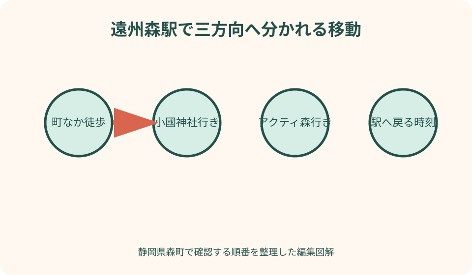
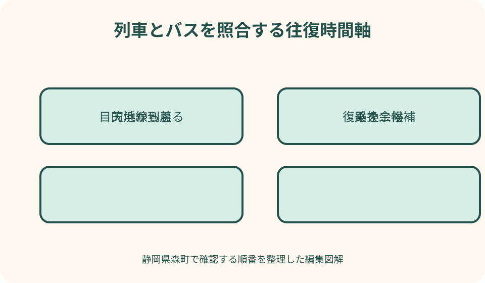

鉄道・バス・町歩き｜最終確認 2026-08-10
静岡県森町・遠州森駅案内｜天浜線から町歩き・バス・小國神社・アクティ森へ
遠州森駅は天竜浜名湖鉄道の駅で、森町観光の玄関口の一つです。駅公式にはトイレ、駅員、電話、バス・タクシー乗り換えなどの設備情報が掲載されています。一方、列車、町営バス、秋葉バスは同じ時刻表ではありません。駅に着いてから次を探すのではなく、往路・接続・復路を別々の公式情報で合わせ、待ち時間を町歩きに使うか駅周辺で待つかまで決めておく必要があります。

駅に着く前に帰りの列車まで決める
遠州森駅へ向かう計画では、到着列車より先に帰りの候補を二本決めます。一本だけにすると、食事、バスの遅れ、施設の混雑がそのまま帰宅困難につながります。天浜線公式の時刻表で方面を確認し、第一候補に間に合わない場合の第二候補まで同行者へ共有します。
時刻表は記事へ固定して写しません。改正、臨時列車、運休があるためです。検索結果の抜粋や個人の経路案内ではなく、天浜線公式の遠州森駅ページから当日の時刻表へ進みます。紙へ書く場合は、確認日、進行方向、平日か休日かも一緒に記します。
運賃も、駅名の組み合わせと乗車券の種類で変わります。天浜線公式の運賃表と乗車券案内で確認し、現金、利用できる決済、きっぷ購入場所を事前に見ます。往復のどちらで駅員対応時間外になるかも想定し、乗り方が不明なら鉄道会社へ尋ねます。
列車到着後に小國神社、アクティ森、町なかの三方向を比較し始めると、接続便を逃しやすくなります。主目的を一つに絞り、駅到着から乗り場までの移動、待ち時間、目的地滞在、復路の余裕を一枚の予定表にします。
駅設備は公式一覧の有無と現地の状態を分けて読む
天浜線公式は、遠州森駅の本屋と上りプラットホームが国の登録有形文化財であることを紹介しています。駅は移動の場所であると同時に歴史ある建物です。写真を撮る場合も、改札、ホーム、乗降客の動線を塞がず、列車接近時は撮影より安全を優先します。
駅公式の設備情報には、一般トイレ、駅員、公衆電話、バス乗り換え、タクシーが掲載されています。ただし、設備欄の丸印は、希望時刻に待たず使えることや、車両が常に待機することを保証しません。窓口案内、現地表示、運行事業者へ確認します。
点字ブロックについては、駅公式の設備表で構内・ホームとも非対応の表示です。視覚障害のある人や段差移動に不安がある人は、当日に同行だけで解決しようとせず、天浜線の車いす利用案内や問い合わせ先へ事前相談し、乗降支援の可否を確認します。
駅公式には駅営業時間も掲載されていますが、列車が走る時間と窓口対応時間は同じとは限りません。きっぷ、精算、観光の質問を駅員へ相談したい人は、乗る列車の時刻だけでなく窓口案内も当日確認します。窓口時間外の乗降方法は、鉄道会社の乗車案内に従います。
駅舎の雰囲気を楽しむ時間と、乗り換え時間を同じにしません。文化財の建物、土蔵を模したトイレ、周辺景観を見るなら、接続バスの直前ではなく、帰りの列車より十分前に戻る計画へ置きます。荷物を通路へ置いたまま撮影しないことも基本です。
列車とバスの時刻表を一枚に写して接続を判定する
森町地域公共交通法定計画は、天浜線を東西方向の交通、路線バスを南北方向の交通として位置づけ、町営バスやタクシーなど複数の移動手段を整理しています。駅から先は一本の鉄道の延長ではなく、別の運行主体へ乗り換える行程です。
森町公式の町営バス案内は、大河内線と吉川線を掲載し、便によって予約が必要であることを案内しています。時刻表だけを見て駅へ行かず、運行日、予約の印、予約期限、連絡先を読みます。予約不要便と予約便を同じ扱いにしません。
予定表には、列車の遠州森駅到着、バス乗り場へ歩く時間、バス出発、目的地到着を横一列に書きます。時刻が近く見えても、ホームから乗り場への移動、きっぷ精算、トイレ、混雑を考えると接続できない場合があります。乗換余裕を自分で設定します。
復路も同じ方法で、目的地発のバス、駅到着、天浜線出発を照合します。最終候補だけでなく一つ前を本命にします。バスが遅れたときに列車が待つとは限らないため、接続保証を前提にせず、駅周辺で待てる時間を残します。
待ち時間は長さではなく使える範囲で分ける
短い待ち時間は、駅舎内外でトイレ、飲料、次の乗り場を確認する時間にします。数分あるから店へ行けると考えず、ホームへ戻る時刻を先に決めます。駅員へ質問する場合も、窓口対応時間と他の利用者がいることを見込みます。
中程度の待ち時間なら、駅周辺の安全な範囲を歩く候補があります。ただし、地図上の直線距離だけで戻れると判断せず、信号、歩道、荷物、暑さ、雨を加えます。目的地へ着いた時点ではなく、ホームへ戻るまでが待ち時間の利用です。
長い待ち時間を町歩きへ変える場合は、荷物をどう持つか、休める場所、店が閉まっていた場合、雨宿りを決めます。コインロッカーなどの設備を当然に期待せず、駅公式に掲載がないものは現地または鉄道会社へ確認します。大荷物なら無理に歩きません。
駅周辺で過ごす代案も準備します。徒歩先の店が休み、天候が悪化し、同行者が疲れた場合、観光を増やさず駅へ戻ります。待ち時間をすべて埋める必要はありません。帰りの列車を落ち着いて待てること自体が、車を使わない旅の重要な余白です。

町なか徒歩は駅を起点と終点にする
森町公式の観光案内・地図を開き、遠州森駅、町なかの施設、川、道路の位置関係を見ます。店名の検索結果を点でつなぐのではなく、駅から歩道のある道を通り、同じ駅へ戻れる輪として考えます。往路と復路で別の道を使うなら、暗くなる前に歩きます。
徒歩の主目的は一つにします。食事、菓子、森山焼、町並みのすべてを回る予定では、営業確認と滞在が増えます。帰りの列車から逆算して、第一目的、時間が余った場合の第二候補、駅へ戻る時刻を決めます。
森町の市街地でも、夏の暑さ、急な雨、川沿いの風、車とのすれ違いで歩行負担は変わります。日陰や休憩場所を地図だけで保証せず、帽子、飲料、雨具を持ちます。歩道が狭い場所では横に広がらず、撮影のため車道へ出ません。
高齢者や子どもと歩く場合、大人だけの地図所要時間を使いません。トイレ、座って休む時間、信号待ちを加えます。駅へ戻る判断時刻を同行者全員へ伝え、誰か一人が買い物を続ける場合も、列車へ乗る人との集合場所を変えません。
小國神社へは専用の交通確認を一段追加する
小國神社は遠州森駅から気軽な駅前徒歩先として扱わず、接続交通を使う目的地として計画します。秋葉バスの小國神社開運線公式は、遠州森駅を経由する運行案内を掲載しています。運行日と時刻は訪問日の公式カレンダーで確認します。
天浜線到着と小國神社行きバスを別タブで開き、乗り換え余裕を見ます。列車が予定どおりでも、駅で乗り場を探す時間があります。初めてなら乗り場写真や案内図を事前に保存し、駅到着後は道路を横断する前に現地表示を確認します。
紅葉、初詣、祭事の日は、通常の所要時間や駐車場情報をバス移動にもそのまま当てはめません。小國神社公式の最新案内とバス事業者のお知らせを確認します。臨時運行が過去にあっても、訪問日にあるとは限りません。
復路は小國神社での参拝時間から決めるのではなく、バス発車、遠州森駅到着、天浜線接続から逆算します。授与所や食事に時間がかかっても、予定を一つ省けるようにします。バスを逃した場合のタクシー連絡先と費用確認も出発前に行います。
アクティ森へは吉川線の予約条件から組み立てる
アクティ森方面は、森町営バス吉川線の案内を確認します。町公式時刻表には遠州森駅前やアクティ森方面の停留所が掲載され、便によって予約が関係します。行きたい体験の時刻より先に、利用便の運行日と予約要否を確定します。
予約が必要な便は、駅へ着いてから連絡すれば必ず乗れるものではありません。町公式が示す予約期限、予約先、キャンセル方法を読み、代表者が人数と利用区間を伝えます。予約した人の氏名、連絡日時、便、乗車停留所を同行者へ共有します。
アクティ森の体験、レストラン、販売所は、バスが着けばすべて利用できるとは限りません。施設公式で営業、予約、受付終了、持ち物を確認します。帰りのバスに間に合うよう、体験終了後の片付け、着替え、停留所までの移動を含めます。
雨や河川状況で屋外体験が変わる場合、バス予約と施設予約の両方へ連絡が必要になることがあります。中止になったら、駅周辺の町歩きへ切り替えるか、天浜線で別駅へ進むかを選びます。予約を残したまま無断で別行程へ変えません。
タクシーは待機を期待せず事前連絡で使う
天浜線公式は遠州森駅の乗り換え欄にタクシーを掲載していますが、到着時に必ず車両が待っているという意味ではありません。利用日時、人数、荷物、目的地を事前に事業者へ伝え、配車可否と概算を確認します。
列車到着直後に電話を始めると、配車待ちが長くなり、次の予定を崩すことがあります。小國神社やアクティ森で予約時刻がある場合、列車の遅れも見込んだ迎車時刻を相談します。運転中の事業者がすぐ応答できない可能性も考えます。
複数人ならバスとタクシーの費用だけでなく、待ち時間、歩行、荷物を比較します。高齢者、乳幼児、大きな荷物がある日は、タクシーで目的地へ直行し、帰路だけバスにする組み合わせもあります。ただし帰路便の予約条件を先に確認します。
配車できない場合の代案も、電話する前に決めます。駅周辺で次の列車を待つ、町営バスの利用可能便へ切り替える、目的地を町なか徒歩へ変更するという順です。見知らぬ車への便乗や、歩けるか不明な距離へ出発することを代案にはしません。
タクシーへ乗る前に、目的地の正式名称と住所を示します。「神社」「アクティ」などの省略ではなく、公式ページを画面に出します。帰りの迎車場所も、施設入口なのか停留所付近なのかを事業者と施設へ確認し、道路上で急に乗降しません。

良い点
遠州森駅は町中心部の観光玄関として、鉄道、バス、タクシーをつなげられる場所です。駅公式から時刻、運賃、設備へ進め、町公式から町営バスへ進めます。運行主体ごとに確認すれば、車を使わない森町訪問を組み立てられます。
登録有形文化財の駅舎とホームがあり、乗り換え場所自体に森町の歴史を感じられます。列車待ちを単なる空白にせず、駅の建物を安全に見る時間へ変えられます。遠出を増やさなくても、駅で地域に触れられる点は鉄道旅の利点です。
町なか、小國神社、アクティ森という性格の違う目的地を選べます。徒歩、路線バス、予約便、タクシーを一つに限定せず、同行者の歩行、天候、予約、帰路から選び直せます。予定を減らす代案を持てることも公共交通旅の強さです。
注文したい点
利用者にとって最も難しいのは、天浜線、秋葉バス、町営バスの時刻と運行日を別々に照合することです。遠州森駅を起点に、目的地、予約要否、乗り場、復路候補へ進める公式の接続画面があれば、古いまとめ記事への依存を減らせます。
駅設備一覧は有用ですが、段差、ホーム移動、待合、荷物、雨天時の動線を初見で判断しにくい部分があります。バリア情報を設備の有無だけでなく、駅入口から乗車までの連続した写真や図で示し、事前相談先へ直接つなげてほしいところです。
観光案内も、車向け所要時間を公共交通利用者へ転用しない工夫が必要です。徒歩圏、定期便で行ける場所、予約が必要な場所、タクシー相談が現実的な場所を分ければ、無理な徒歩や乗り遅れを防げます。
代案・結論
遠州森駅を使う日は、天浜線の往路と復路を公式で確認し、復路を二候補持ちます。次に目的地のバスを別の公式ページで確認し、運行日、予約、乗り場、乗換余裕を記します。時刻は記事から写さず、訪問日の情報を使います。
接続が悪い場合、待ち時間を無理に埋めません。駅周辺で待つ、町なかを一か所歩く、予約したタクシーを使う、目的地を別日にするという順で代案を持ちます。小國神社とアクティ森を同日に詰め込まないことも有効です。
小國神社は秋葉バスの運行と神社の最新案内、アクティ森は町営バス吉川線の予約条件と施設受付を確認します。同じ「駅からバス」の一文へまとめず、当事者が異なることを予定表にも残します。
家族の共有メモには、列車方向、復路二本、バス予約、乗り場、駅へ戻る時刻、タクシー代案を書きます。旅行中は確認済みの画面を保存しても、運休や変更があれば最新公式へ戻ります。最終判断は現地放送と係員案内に従います。
大石の視点
私は遠州森駅を、観光地への入口というより、移動方法を切り替える場所として見ます。鉄道を降りた人が徒歩、定期バス、予約便、タクシーのどれを選ぶかで、同じ森町でも一日の範囲が変わります。駅からの距離だけでなく、戻れることまで書く案内が必要です。
待ち時間に予定を詰めるより、駅へ早く戻る余白を勧めます。地方鉄道と地域交通を使う日は、一本逃した影響が大きいからです。余白は退屈ではなく、駅舎を見て、同行者の体調を確かめ、次の乗り場を確認するための実用時間です。
森町らしい鉄道旅は、遠くまで歩けたかでは決まりません。町なかを一つ見る、小國神社で参拝する、アクティ森で一つ体験する。そのどれかを公式交通で往復できれば十分です。移動の約束を守ることが、次の訪問へつながります。
公式情報・確認先
掲載内容は次の一次情報を基礎に整理しました。営業、料金、催し、交通は変わるため、出発前または手続き前にリンク先で最新情報を確認してください。
- 森町営バスのご案内（静岡県森町、2026-08-10確認）
- 森町地域公共交通法定計画（静岡県森町、2026-08-10確認）
- 遠州森駅 路線と駅情報（天竜浜名湖鉄道、2026-08-10確認）
- 観光案内・地図（静岡県森町、2026-08-10確認）
- 小國神社開運線（秋葉バスサービス、2026-08-10確認）
- 森町体験の里 アクティ森（静岡県森町、2026-08-10確認）